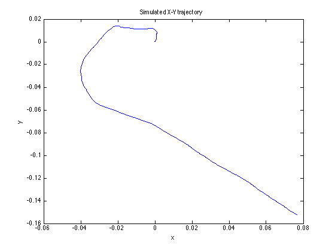
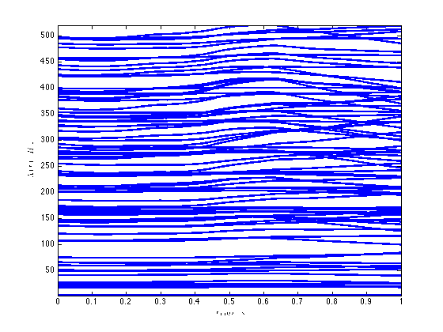
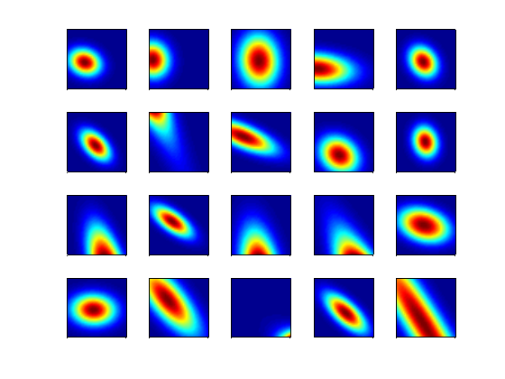
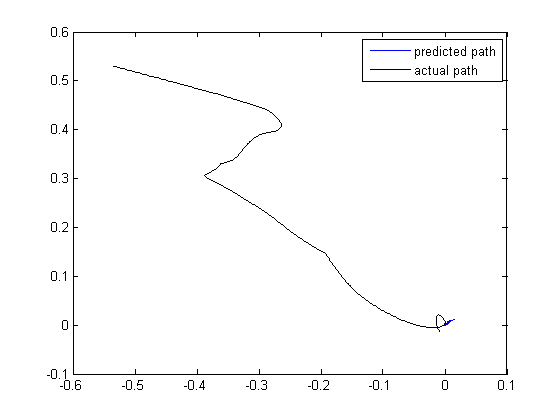

Contents
2-D Stimulus Decode
Here we simulate hippocampal place cell receptive fields and their firing during a 2-d spatial task. We then use the ensemble firing activity to estimate the path based on the only the point process observations
delta = 0.001; Tmax = 1; time = 0:delta:Tmax; px = zeros(1,length(time)); py = zeros(1,length(time)); Q=.01; r = Q.*randn(2,length(time)); vx = cumsum(r(1,:))'; vy = cumsum(r(2,:))'; velSig = SignalObj(time, [vx, vy],'vel'); posSig = velSig.integral; posData = posSig.data; px = posData(:,1); py = posData(:,2); % N=100; A=1; B=ones(1,N)./N; % px = filtfilt(B,A,px); % py = filtfilt(B,A,py); figure; plot(px,py); title('Simulated X-Y trajectory'); xlabel('x'); ylabel('y');
Generate random receptive fields to simulate different neurons
clear lambdaCIF lambda tempSpikeColl n spikeColl numRealizations=80; coeffs = -abs(1*randn(numRealizations,5)); coeffs = [-2*abs(randn(numRealizations,1)) coeffs]; dataMat = [ones(length(time),1) px py px.^2 py.^2 px.*py]; for i=1:numRealizations tempData = exp(dataMat*coeffs(i,:)'); lambdaData = tempData./(1+tempData); lambda{i}=Covariate(time,lambdaData./delta, '\Lambda(t)','time','s','Hz',{strcat('\lambda_{',num2str(i),'}')},{{' ''b'', ''LineWidth'' ,2'}}); tempSpikeColl{i} = CIF.simulateCIFByThinningFromLambda(lambda{i},1); n{i} = tempSpikeColl{i}.getNST(1); n{i}.setName(num2str(i)); lambdaCIF{i} = CIF(coeffs(i,:),{'1','x','y','x^2','y^2','x*y'},{'x','y'},'binomial'); end % View the different neuron conditional intensity functions figure; for i=1:length(lambda) lambda{i}.plot; end legend off; % Visualize Simulated Receptive Fields clear placeField; [X,Y]=meshgrid(-2:.1:2,-2:.1:2); figure; for i=1:numRealizations tempData = coeffs(i,1) + coeffs(i,2)*X + coeffs(i,3)*Y +coeffs(i,4)*X.^2 + coeffs(i,5)*Y.^2 + coeffs(i,6).*X.*Y; placeField{i} = exp(tempData)./(1+exp(tempData))./delta; %rate based on logistic link function end fact=factor(numRealizations); for i=1:numRealizations if(length(fact)==1) subplot(1,numRealizations,i); elseif(length(fact)==2) subplot(fact(1),fact(2),i); elseif(length(fact)==3) subplot(fact(1)*fact(2),fact(3),i); end pcolor(X,Y,placeField{i}), shading interp axis square; set(gca,'xtick',[],'ytick',[]); end 
Decode the x-y trajectory
spikeColl = nstColl(n); spikeColl.resample(1/delta); dN = spikeColl.dataToMatrix;
vx=10*std(px(2:end)-px(1:end-1)); vy=10*std(py(2:end)-py(1:end-1)); Q=[vx 0;0 vy]; Px0=.1*eye(2,2); A=1*eye(2,2); % The PPDecodeFilter uses the matlab symbolic toolbox to evaluate the % gradient and hessian of the CIF. It is currently not working properly. [x_p, Pe_p, x_u, Pe_u] = DecodingAlgorithms.PPDecodeFilter(A, Q, Px0, dN',lambdaCIF,delta); figure; plot(x_u(1,:),x_u(2,:),'b',px,py,'k') legend('predicted path','actual path');